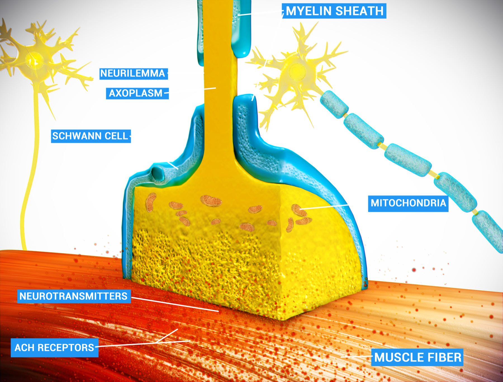

Comparação chocante
Onde a MG corta a sinapse
Placa saudável aguenta o esforço habitual; na MG a placa falha com o uso. O alvo é pós-sináptico: o receptor de acetilcolina.
Alvo = AChR
A miastenia gravis é uma doença autoimune contra o receptor de acetilcolina (AChR) na placa motora. O ataque diminui quantidade/função dos receptores disponíveis. Menos receptores → menos despolarização efetiva → fraqueza.
Sinapse normal
Esquema da placa: terminal axônico do 2º neurônio motor → vesículas recheadas de acetilcolina (ACh) → liberação na fenda sináptica → ligação ao receptor na membrana muscular → abertura de canais iônicos → despolarização → contração.
ACh = acetilcolina — o grande neurotransmissor da sinapse neuromuscular.

Doctor Jana, via Wikimedia Commons. Licensed under CC BY 4.0. Source: commons:Neuro_Muscular_Junction.png

Fenda · AChR
A estrutura canônica da placa: terminal pré-sináptico libera ACh na fenda; do outro lado, a membrana muscular concentra os AChR nos picos das dobras juncionais. Quando o alvo está intacto, há margem de segurança: EPP bem acima do limiar.
Fatigabilidade (não fraqueza isolada)
A grande característica clínica não é a fraqueza isolada, e sim a perda de força com o movimento: a fatigabilidade.
Após liberada, a ACh é rapidamente degradada pela acetilcolinesterase. Os produtos retornam ao neurônio para produção de mais ACh (reciclagem). Ciclo normal, a grosso modo: libera → ativa o músculo → degrada → recicla → libera de novo — processo extremamente eficiente.
Em placa saudável, esse ciclo não falha no esforço habitual: quem "para" na 3ª flexão sem condicionamento é o músculo, não a placa. Na miastenia, a placa é que vai falhando com o tempo de uso.
Modelo didático + repouso (disclaimer)
O modelo "problema de reciclagem / entrega cada vez menor de ACh" não é o pé da letra fisiopatológico — é um modelo grosseiro didático para guardar a fatigabilidade.
Modelo: a engrenagem de entrega falha no contexto de receptores já reduzidos → cada estímulo entrega menos ACh efetiva → cada vez mais fraco. Com o repouso, há tempo de reencher as vesículas → no reinício, entrega inicial maior → força recupera → depois a fatigabilidade reaparece.
Bordão: Quanto mais usa, mais fraco — até repousar.
Placa saudável × Placa miastênica
Saudável
Ciclo eficiente: libera ACh → ativa o músculo → degrada → recicla. Margem de segurança alta; EPP bem acima do limiar; o esforço habitual não derruba o sinal.
Miastenia
AChR reduzido. O mesmo estímulo encontra menos receptor → EPP cai com o uso → a contração enfraquece. Repouso reabre a janela de força (reciclagem vesicular).
Sinapse NM normal × MG: dois painéis com hotspots.
Curva força × tempo de uso: cai com o esforço, sobe com o repouso.
Quiz
Q1. O alvo autoimune clássico da MG é:
Gabarito: B. MG = ataque pós-sináptico ao AChR.
(A) é LEMS. (C) EM. (D) miopatia.
Q2. A assinatura clínica nuclear da MG é:
Gabarito: B. Padrão flutuante — piora com o uso, melhora com o repouso.
Q3. O modelo "reciclagem/entrega falha" da fatigabilidade deve ser lido como:
Gabarito: B. Modelo didático grosseiro — não é a fisiopatologia molecular definitiva. Use-o para guardar a fatigabilidade e seguir adiante.